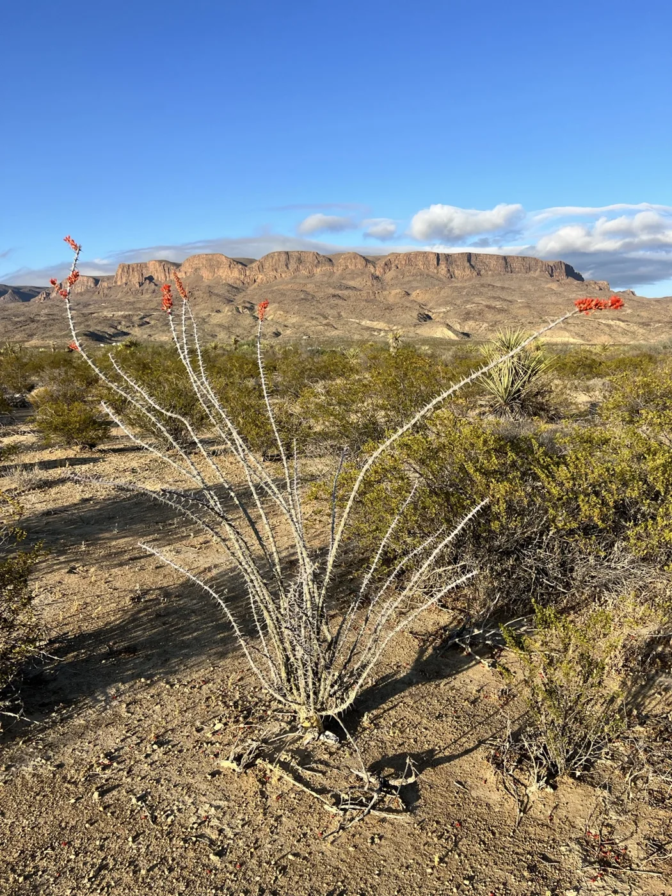
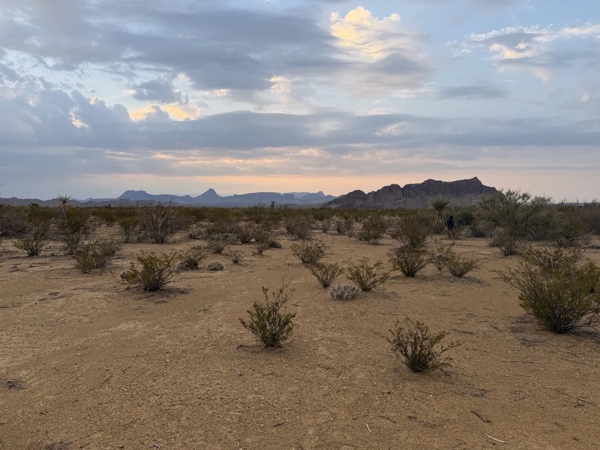
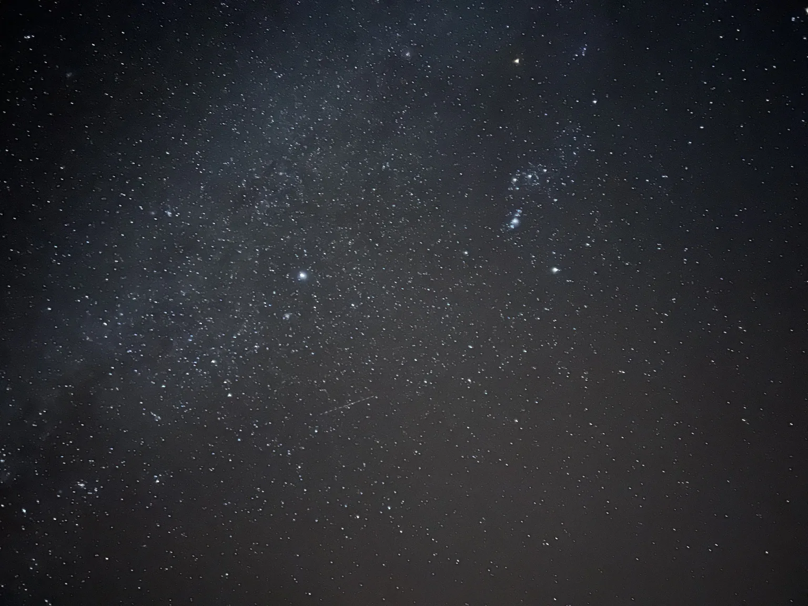
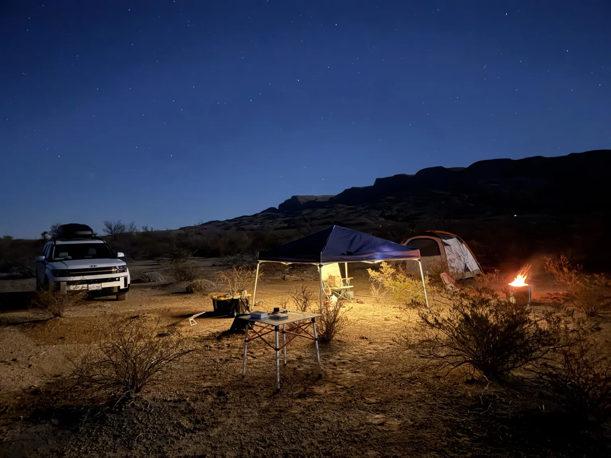
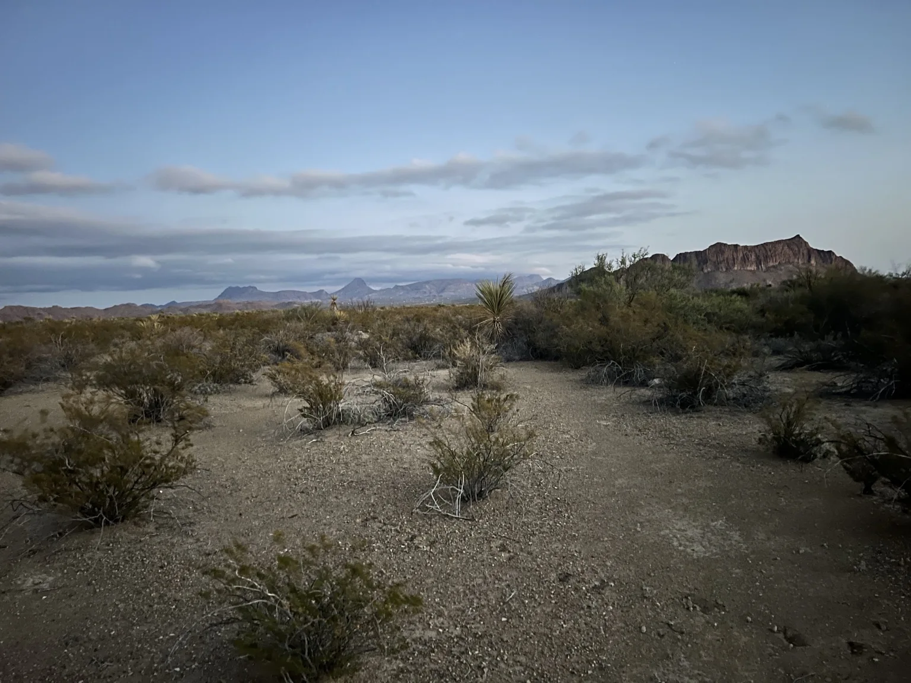
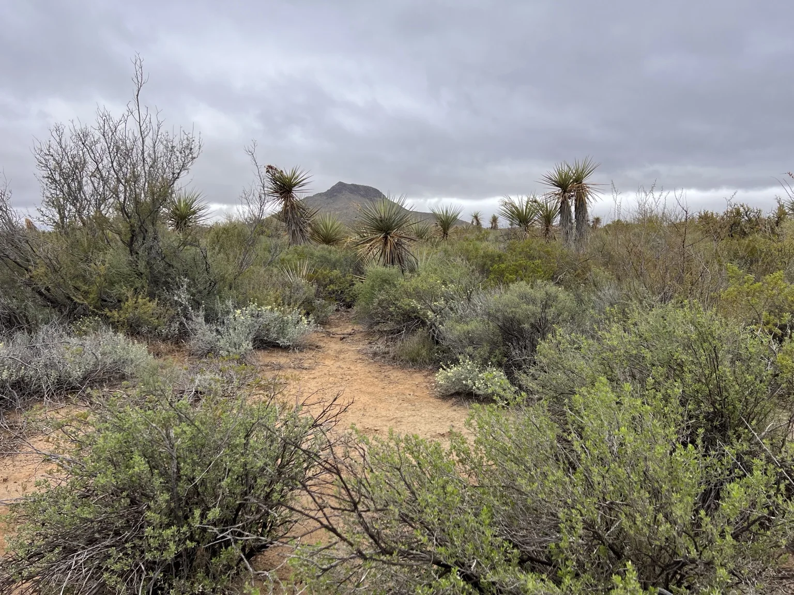
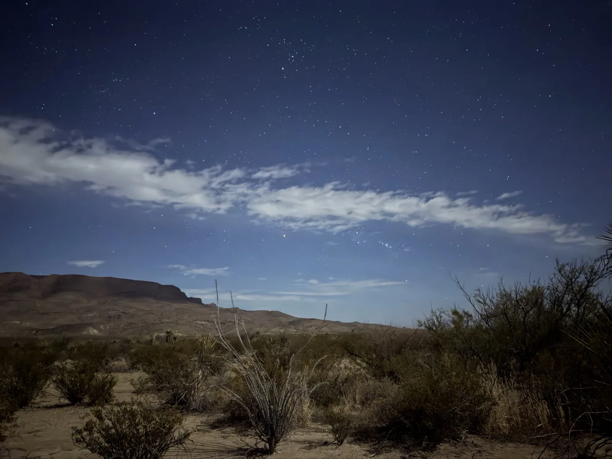

Five private acres
Just one booking at a time. Your group has exclusive use of the property during your stay.
Five acres of open desert, mountain views, and star-filled skies. One group at a time. All yours to explore.
Discover the landFar West Coyote is a raw, privately booked five-acre camping property in the Terlingua desert. Bring your own gear, find your spot, and settle in for big views, quiet evenings, and a night sky worth staying awake for.
Just one booking at a time. Your group has exclusive use of the property during your stay.
True primitive camping. Pack your tent, food, water, and everything you need for a self-sufficient stay.
Watch the stars appear above the mountains as daylight fades. Night-sky views depend on weather and moonlight.

Ocotillo blooms, rugged mountains, and an ever-changing desert horizon. No manicured lawns or resort amenities—just the landscape as it is.






All photographs taken on the property. Camping equipment pictured is privately owned and is not provided with reservations.
There's a particular kind of quiet out here. Bring a chair, look up, and give yourself time to notice it.
This is undeveloped desert land, not a serviced campground. A good trip begins with realistic expectations and the right supplies.
Exact directions and final guest policies will be provided when reservations launch.
Bookings aren't open yet. We're preparing the property and finalizing guest information so future stays can be safe, straightforward, and memorable.
Check back soon at farwestcoyote.com.